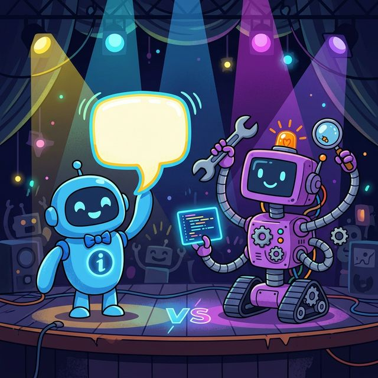
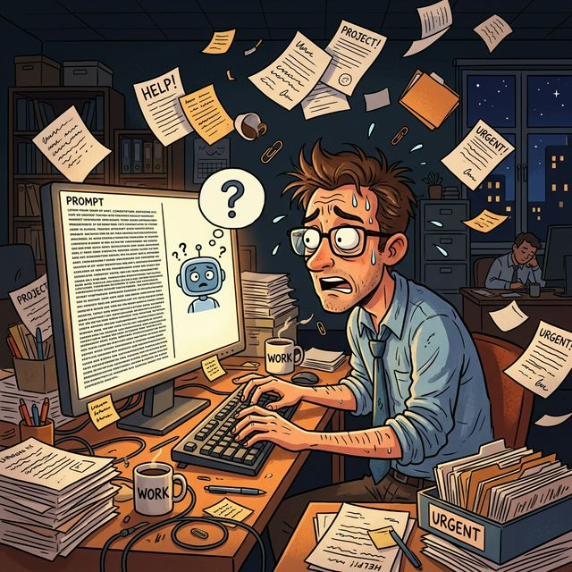
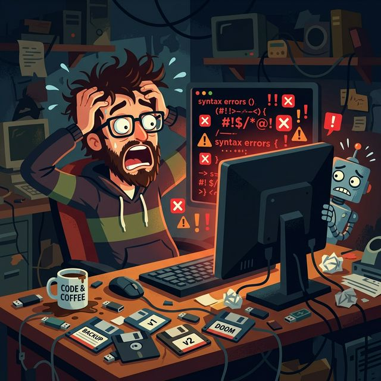
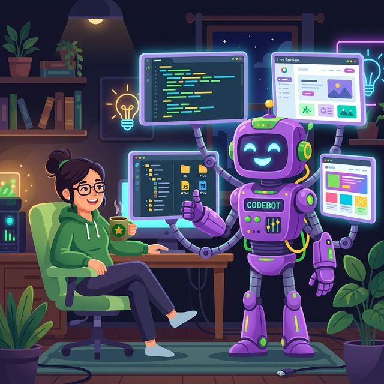
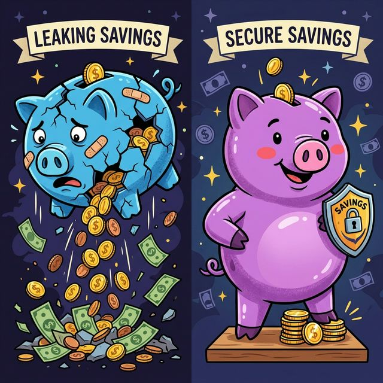
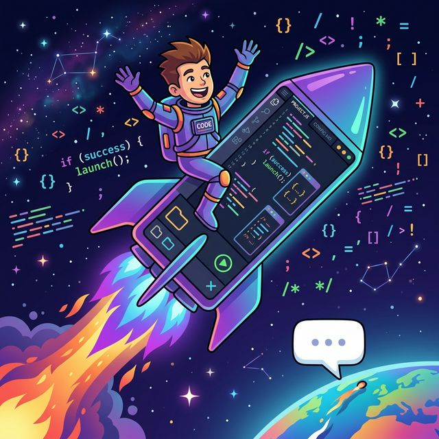

兩款主流 AI 開發工具的實際使用比較
目標：找到最適合團隊工作場景的 AI 工具
Gemini 屬於指令驅動型的 AI 工具，透過對話介面完成任務。
💡 特點：使用者需明確定義需求細節與輸出格式，才能獲得精準結果

需撰寫高品質的提示詞，明確定義角色、需求與格式，否則產出容易偏離預期。
採取一問一答模式，複雜需求需多次往返溝通，隨輪次增加效率遞減。
長程式碼處理時可能閃退或對話遺失，且存在程式碼被誤改的風險，需手動備份。

Antigravity 定位為整合開發環境，涵蓋程式撰寫、即時預覽與測試驗證。
💡 特點：從需求理解到成果交付的完整自動化流程

無需撰寫複雜提示詞，即可準確理解需求並主動推薦合適的工具方案。
每一步的修改內容與原因皆清楚記錄，確保使用者掌握全部變動。
內建可視化預覽，支援單一檔案精確修改，避免連帶影響其他部分。
| 比較項目 | 🔵 Gemini | 🟣 Antigravity |
|---|---|---|
| 提示詞要求 | 需撰寫詳細指令 | 簡短描述即可理解 |
| 協作模式 | 一問一答，逐次往返 | 主動規劃，自動化執行 |
| 程式碼管理 | 有字數限制與誤改風險 | 精確微調，完整度高 |
| 結果驗證 | 需手動複製並運行 | 內建即時預覽確認 |
| 操作介面 | 聊天對話框 | 整合代碼、工具與預覽 |
不同計費模式對長期使用成本的影響


Gemini — 通用型 AI 助手
Antigravity — 開發型 AI 夥伴
以上是我從 Gemini 轉換至 Antigravity 後的實際使用心得。
在工作中，Antigravity 有效減少了來回溝通的時間成本，也降低了程式碼誤改的風險。
希望這份報告能作為各位選擇 AI 工具時的參考依據。
歡迎提問與交流